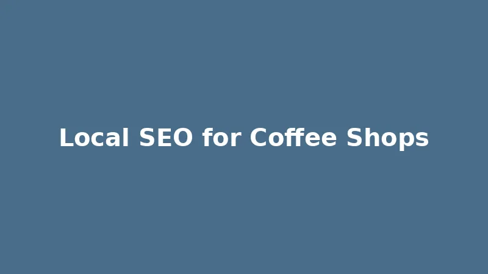

Local SEO for Coffee Shops: Brewing Up Business in Your Neighborhood in 2026

In the vibrant world of coffee, a strong local presence is key. Customers aren't typically traveling across town for their daily caffeine fix; they're looking for that convenient, cozy, and high-quality coffee shop right in their neighborhood. This makes Local SEO not just important, but absolutely crucial for your coffee shop to thrive in 2026. Without a robust online presence in local search results, your aromatic brews might remain undiscovered.
Why Local SEO is the Perfect Blend for Your Coffee Shop's Success
Imagine a customer searching "best coffee shop near me" or "cafe with wifi [your city]". If your coffee shop isn't among the top results, you're missing out on immediate, high-intent customers. Local SEO helps you:
- Attract Local Customers: Directly targets users in your geographic area who are looking for a great cup of coffee now.
- Increase Foot Traffic & Repeat Business: Higher visibility translates to more new visitors and loyal regulars.
- Build Community Hub Status: A prominent local online presence reinforces your role as a neighborhood gathering spot.
- Stand Out from Chains: Levels the playing field against larger coffee chains, allowing your unique atmosphere and offerings to shine.
Essential Local SEO Strategies for Coffee Shops in 2026
1. Optimize Your Google Business Profile (GBP)
Your Google Business Profile is the digital menu board of your coffee shop. This free tool allows you to control how your business appears on Google Search and Maps. Ensure every section is meticulously completed:
- Accurate Information: Double-check that your business name, address, phone number (NAP), and website are consistent with all other online listings.
- Business Categories: Select all relevant categories, starting with "Coffee Shop" and adding others like "Cafe," "Espresso Bar," "Breakfast Restaurant," or "Bakery" if applicable.
- Hours of Operation: Keep these updated, especially for early mornings, late evenings, and holidays.
- Photos: Upload high-quality, inviting photos of your coffee, latte art, pastries, comfortable seating areas, and happy customers. Ambience sells!
- Services & Products: List your key offerings, from pour-overs and espresso drinks to sandwiches, pastries, and merchandise.
- Posts: Use GBP posts to announce daily specials, new seasonal drinks, live music events, or community gatherings.
- Q&A: Proactively answer common questions customers might have about Wi-Fi, seating capacity, or vegan options.
Regularly updating your GBP signals to Google that your business is active and relevant to local searches.
2. Cultivate Customer Reviews: The Word-of-Mouth of the Digital Age
Positive reviews are incredibly valuable for local coffee shops. They not only boost your local search rankings but also significantly influence potential customers' decisions. Encourage your happy customers to leave reviews on Google, Yelp, and other relevant platforms.
- Ask Directly: A polite request at the counter, on your loyalty cards, or with a QR code can make a big difference.
- Respond to All Reviews: Thank customers for their kind words and professionally address any constructive criticism. This demonstrates excellent customer service and commitment to quality.
3. Local Keyword Research: What Are Your Customers Sipping On?
Think like your customers. What terms would they use to find your coffee shop? Beyond "coffee shop," consider:
- "Best latte [city/neighborhood]"
- "Cafe with outdoor seating [city]"
- "Study friendly coffee shop [city]"
- "Brunch near me [city]"
- "Locally roasted coffee [city]"
Integrate these keywords naturally into your website content, blog posts (e.g., "Our Guide to the Best Local Roasters in [City]"), and GBP descriptions. Focus on providing valuable information rather than keyword stuffing.
4. Optimize Your Website for a Smooth Online Experience
- Mobile-Friendly Design: Many local searches happen on mobile devices. Ensure your website is responsive, easy to navigate, and loads quickly on all screens.
- Local Content: Create dedicated pages for each location if you have multiple branches, or blog posts about local events you participate in. Highlight your connection to the community.
- NAP Consistency: Double-check that your Name, Address, and Phone Number are identical across your website and all online directories. Inconsistencies confuse search engines and customers.
- Schema Markup: Implement LocalBusiness schema markup on your website to help search engines understand key information about your coffee shop, such as opening hours, menu, and reviews.
5. Build Local Citations and Fresh Backlinks
Citations are online mentions of your business's NAP. List your coffee shop in relevant online directories like Yelp, TripAdvisor, local food blogs, and community event listings. Aim for consistency across all listings.
Backlinks (links from other websites to yours) from local publications, community organizations, or neighboring businesses can significantly boost your authority. Consider collaborating with local bakeries, bookshops, or art galleries for cross-promotion.
Brew Your Way to the Top with Local SEO
Local SEO is an ongoing process, much like perfecting a new espresso blend. By consistently optimizing your Google Business Profile, actively seeking and responding to reviews, conducting thorough local keyword research, perfecting your website, and building valuable local citations, your coffee shop will not only attract more customers but also solidify its place as a beloved neighborhood institution in 2026. Start implementing these strategies today and watch your online presence – and your business – brew success!
Don't miss our related posts: